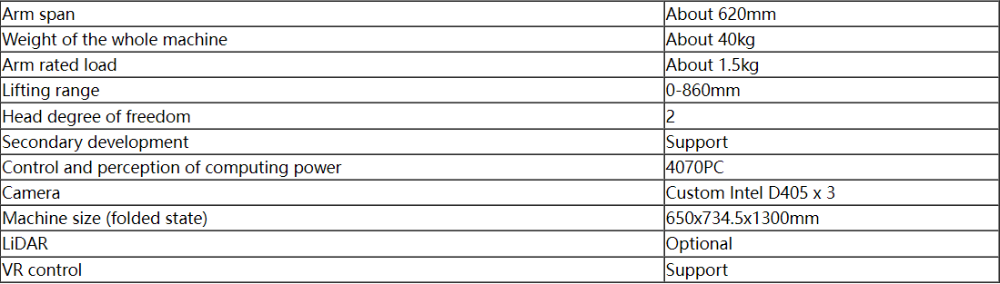
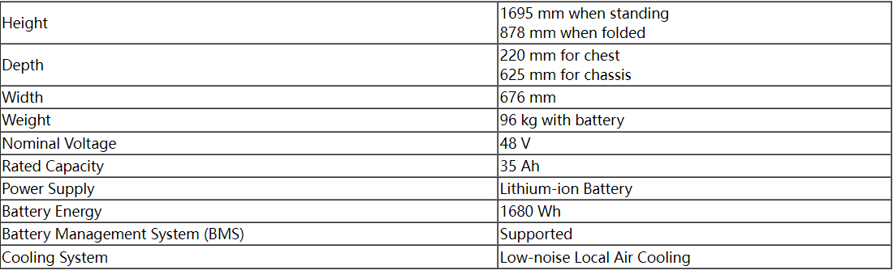

Summary
There have been lots of awesome works around the topic of bimanual teleoperation and learning from demonstration, employing various human sensing systems and robot embodiments. To name a few, ALOHA, Mobile ALOHA, DexCap, Open-TeleVision, HATO, GELLO, AirExo, UMI, etc.
However, researchers design and evaluate on tasks that they come up with and perform teleoperation themselves. Also, there are lots of metrics that are critical for industry that are not evaluated in the academic research works, such as motion speed, system robustness, cost efficiencies, and difficulty to learn an effective policy.
Therefore, there has been a demand in the industry to set up a common set of tasks benchmark that is practically valuable and reflects various axes and levels of difficulty. The goal of this competition is to bring together researchers with industry and figure out the best fits between valuable tasks and technology solutions.
In this competition, participants are invited to use a wide range of ways: puppeteering, VR, exoskeleton, hand-held grippers, movement-tracking gloves, or algorithmic human hand sensing to perform challenging and practically valuable manipulation tasks and collect data meanwhile. We will evaluate the teams in terms of their task completion quality, data collection speed, and performance of policy learned using the collected data.
Competition tasks (Tentative)
Teams are require using teleoperation to accomplish challenging dexterous tasks that require two arms to accomplish, which is a highlight difference of this competition versus others. The tasks were designed and adapted to be suitable for competition by sponsors with extensive practice experience in the field, some are the key technical challenges to their businesses, each of which has on the order of billions of USD scale Total Addressable Market (TAM). On the technical side, academic organizers intentionally include the open research challenges, such as manipulating articulated (paper box), fragile (test tube) and soft objects (linen), dynamic/moving objects (on conveyer), etc.
Logistics – Packing
On the conveyor line, 10 Picking bins flow at a certain speed to the picking point, and the Robot takes a cargo from each bin and puts it in the next Packing bin
Description:
1. The goods in each Picking bin are the same kind of goods
2. The goods in different Picking bins have different shapes, sizes, weights
3. Picking bin has a limited duration of X seconds at the picking point
4. There is only one Packing bin to collect the 10 goods
5. The task can be divided into general version and advanced version. The general version uses plastic material box as packing bin, the advanced version uses cardboard box as packing bin, and the advanced version requires robot to close the cardboard box after placing 10 goods

Requirements:
1. Picking time, the accumulation of 10 picking times
2. Packing time, accumulation of 10 placement times
3. The goods in the Packing bin should be stacked tightly and neatly, and cannot exceed the height of the bin
4. The cardboard box should be closed well after placing for advanced version task
Demo pics:
he paper boxes in the plastic boxes in the figures are mock representation example of the goods, in real competition they would be various objects, take YCB objects as examples:


Life science R&D - Experiment
Silica Gel Column Installation and Sample Tube Handling: In this task, the robot must perform a series of operations related to setting up a column chromatography system and handling glass sample tubes. The task includes three main steps:
Description:
- Installing a Silica Gel Column:
The robot retrieves a silica gel column from a designated storage area and installs it on a column chromatography device. The column uses a Luer lock connection, requiring the robot to precisely align and tighten the connection to ensure a secure and sealed fit.
-
The robot must use its vision system to locate and identify the correct silica gel
column.

-
The robot must accurately grasp, align, and tighten the silica gel column (with a Luer
lock male and female interface) to ensure proper connection.

-
The tightened column must then be placed onto a fixed rack (a model of which will be
provided later).

- The connection must be secure and leak-free.
-
The robot must use its vision system to locate and identify the correct silica gel
column.
- Arranging Sample Tubes:
The robot is given a basket of randomly placed glass sample tubes. It must arrange the tubes neatly onto Rack A, filling all 30 positions (5x6 grid).
-
The robot must neatly arrange the randomly placed glass sample tubes from the basket
onto Rack A.

- Ensure that all 30 positions on Rack A (5x6 grid) are properly filled, with the tubes placed neatly and in an orderly manner.
-
The robot must neatly arrange the randomly placed glass sample tubes from the basket
onto Rack A.
- Selecting and Pouring Sample Tubes:
After the rack is filled, the referee provides a diagram specifying which sample tubes to retrieve. The robot must accurately identify and select the specified tubes based on the diagram, place them into Rack B, and pour the liquid from the remaining tubes into a waste container without spilling.
-
The robot must accurately select and retrieve the specified sample tubes from Rack A,
based on the provided diagram（e.g. green), and place them onto Rack B.


- The robot must pour the liquid from the remaining sample tubes into a waste container
without spilling and place the emptied tubes into a designated bin.

-
The robot must accurately select and retrieve the specified sample tubes from Rack A,
based on the provided diagram（e.g. green), and place them onto Rack B.
Requirements:
- Alignment, Tightening Speed, and Accuracy of Silica Gel Column: The robot’s ability to align, quickly and securely tighten the silica gel column without multiple adjustments or over-tightening.
- Speed and Accuracy of Tube Arrangement: The robot’s ability to arrange all tubes quickly and accurately in a structured manner on Rack A.
- Accuracy of Tube Selection: The precision with which the robot selects the correct tubes based on the diagram.
- Precision in Pouring: Whether the robot can pour liquid from the remaining tubes without causing spills or errors.
- Success Rate of Each Sub-task: How successfully the robot completes each sub-task without errors.
- Completion Time of Each Sub-task: The time taken by the robot to complete each sub-task efficiently.
Service – Table organizing
Robot is required to perform a series of table top service operations
Detailed processes:- Tablecloth: take out tablecloth and unfold it and cover the table, or fold the tablecloth and then return it.

- Clean trash: grasp trash from the table and throw them into trash bin or trash bag.
- Prepare plates: Take plates from the cabinet and put them in a row, or collect the plates and stack them and put them back in the cabinet.
Overall Evaluation and Scoring Rules for Real tasks
Each team is given a fixed budget in virtual dollars, based on how they teleop, their data collection price differs (assuming the robots are free)
- In person teleop: side by side with robot, access all information, most expensive, based on HIGH hourly rate
- Close distance teleop: access only onboard sensors, low latency, based on MID average hourly rate
- Far distance teleop: access only onboard sensors, large latency, frequent connection breakages, based on LOW labor hourly rate
- During data collection, if the team successfully accomplish a task, they earn extra credit budget of HIGH hourly rate * time a human use to complete the task, if they made catastrophic failure, a penalty will be deducted
Teams are evaluated using two objectives:
- Teleop competition: measure if they can replace human using teleop, evaluated based on teleop task completion quality and speed compared with human performance
- Learning from demonstration: measure with fixed budget, how much data could be collected, and if possible, how much of the task that a model trained using the budget could accomplish
Award Budget and Funding Sources
We plan to allocate a total of $10,000 for the award pool for each task.
- Grant Prize: Awarded to the team with the best overall performance across all
tasks.
- 1st Place: $5,000
- 2nd Place: $2,000
- 3rd Place: $1,000
- Best Teleoperation Performance: $2,000
- Awarded to the team demonstrating the highest quality and speed in teleoperation tasks compared to human performance.
Competition format and Schedule
- Before conference:
- Teams first get familiar with the bimanual robot APIs in simulation, they can use keyboards to play with demos.
- Teams develop teleop systems to accomplish manipulation tasks and upload the data (we will train a policy using a default approach) or train a policy and upload the policy using the teleop data
- Those whose policy or data the sim tasks will be invited to conference
- Teams who will join the real competition could ahead of time get in touch with the corresponding hardware sponsor and get familiar with tele-operating real robots
- At conference
- Teams accomplish tasks and collect data using their budgets and train models using their data and deploy their model
Schedule
Conference registration open date: Jan 3rd, 2025
Info session: Jan 15th, 2025
Teams and hardware sponsors R&D: Jan - May, 2025
Onsite competition: : May 19 - 23, 2025
Onsite schedule:
| Time | May 19 - 20 | May 21 - 22 | May 23 |
|---|---|---|---|
| 8:30 - 9:00 | Participants check in | Organizers and teams train and evaluate policy on robot |
Awards & wrap up |
| 9:00 - 14:00 | prepare and test connectivity | ||
| 14:00 - 16:00 | Teleoperation | ||
| 16:00 - 17:00 | Logistics Wrap Up |
Hardware and human resources
The teams are responsible for transporting their teleop sensing system to Atlanta, they can transport their robot, too, if they want to leverage advanced features like force sensing, but since transporting robots is expensive, we have three hardware sponsors, AgileX, ARX, and Galaxea who will provide and transport their robot hardware for the competition.
For those teams who would like to use exoskeleton, hand-held grippers, movement-tracking gloves, or algorithmic human hand sensing for data collection, they are responsible for projecting their data to the action space of the sponsor robot, or their own robot if they transport their robot to Atlanta.
Depending on the funding to be raised, we may hire human operators to help collect data and judge the task completion qualities.
AgileX (COBOT Magic)


ARX (X7/LIFT)
Omnidirectional moving chassis, high-speed lifting mechanism, VR Teleoperation Platform



Galaxea (R1)


Organisers

Zhuo Xu
Research Scientist, Google Deepmind
Tao Chen
CEO, Dexmate
Toru Lin
PhD Candidate, UC Berkeley
Lingfeng Sun
Research Scientist, Boston Dynamics AI Institute
Danfei Xu
Assistant Professor, Georgia Tech
Peter Yu
CTO, XYZ Robotics
Wenhao Yu
Research Scientist, Google Deepmind
Xinghao Zhu
Research Scientist, Boston Dynamics AI InstituteSponsors

AgileX

ARX
Labbotics

Galaxea

HAI robotics
RoboForce